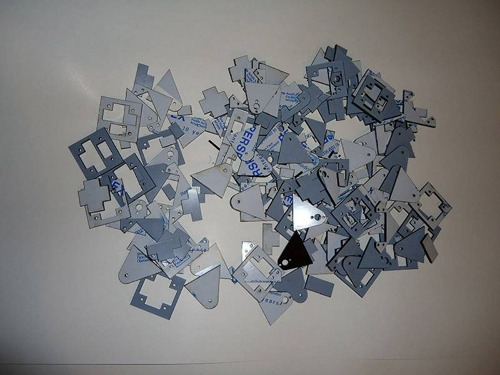
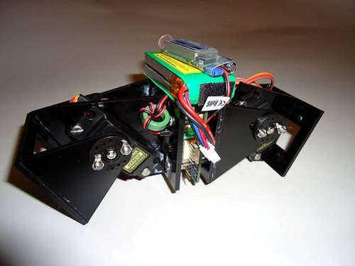

Miguel Ãngel Berna nos informó en este hilo del grupo Skylist de google de que ha recibido las piezas para montar 20 módulos Y1. La plantilla que ha utilizado está colgada en el wiki de los módulos. Envió a ponoko la plantilla creada por Daniel Berdugo (en formato SVG) y le devolvieron una versión en formato EPS corregida y lista para fabricar.
Además ha construido un prototipo del robot Minicube-I:

Muchas gracias por la plantilla y las fotos 😉